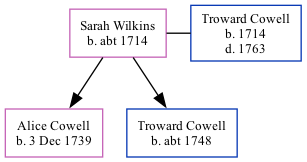

Sarah Wilkins, the wife of Troward Cowell (the six times great-uncle of Nigel Horne), was born c. 17141 and married Troward (a cheesemonger with whom she had 2 children: Alice Troward and Troward) at St Peter-upon-Cornhill Church, Cornhill, London, England on Jan 26, 17381 (Civil marriage in All Hallows, Barking, then parish marriage the next day at St Peter upon Cornhill). In 1755, she lived at Tower Street, London, England.
London and Surrey, England, Marriage Bonds and Allegations, 1597-1921 Online publication - Provo, UT, USA: Ancestry.com Operations, Inc., 2011.Original data - Marriage Bonds and Allegations. London, England: London Metropolitan Archives. Surrey Marriage Bonds and Allegations records held by the London Metropolitan Archives,
Media
Troward Cowell - Sarah Wilkins - marriage bond
Leeds Intelligencer - 2 Dec 1755
Family Tree

Map
Generated by Ged2Site. Last updated on Apr 1, 2025